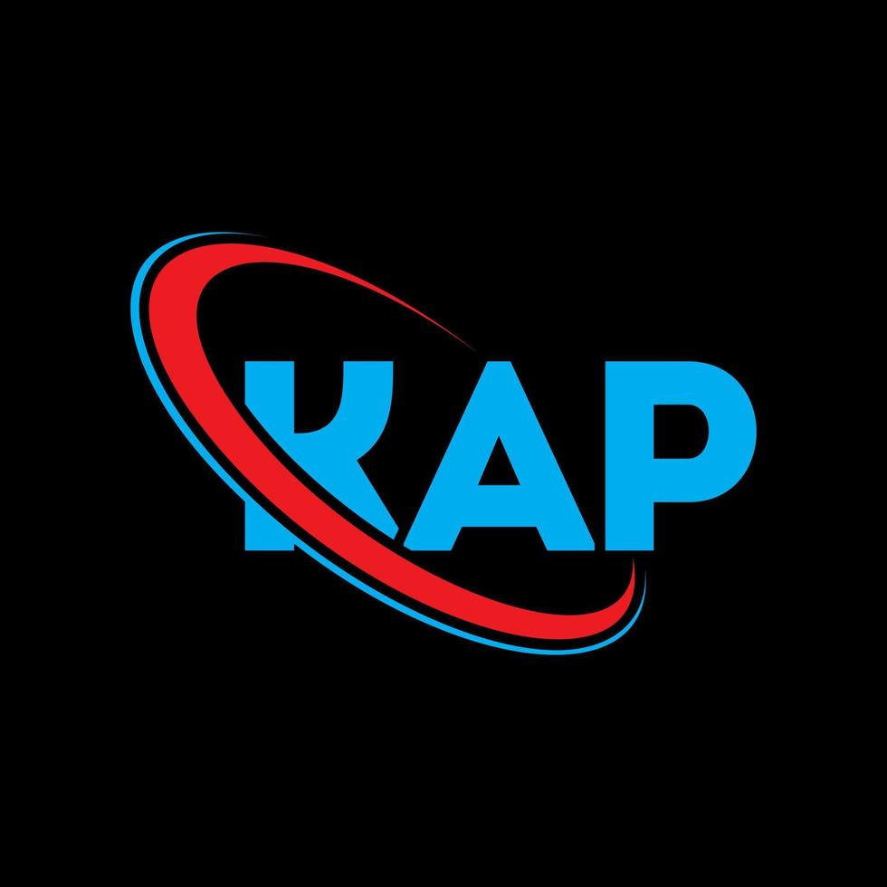

kantor Akuntan Publik Hidayat & Rekan merupakan kantor yang memberikan layanan profesional dalam bidang audit, perpajakan, dan sistem informasi akuntansi. Kami menjunjung tinggi Integritas dan Transparansi dalam setiap pelayanan kepada klien serta didukung oleh tenaga profesional Certified Public Accountant
Gedung Hidayat Accounting Center
Jl. A. Ahmad Yani No. 123, Banjarmasin, Kalimantan Selatan, Indonesia
Banjarmasin
| Laporan Laba Rugi - Kuartal | ||
|---|---|---|
| Keterangan | Debit | Kredit |
| Pendapatan Jasa | - | Rp 50.000.000 |
| Beban Operasional | Rp 10.000.000 | - |
| Laba Bersih | Rp 35.000.000 | |
Referensi standar akuntansi yang kami gunakan bersumber dari Ikatan Akuntan Indonesia (IAI)